Mooncake: Trading More Storage for Less Computation — A KVCache-centric Architecture for Serving LLM Chatbot
Mooncake 把長上下文的既有 KVCache 從「單機附屬資料」提升為可跨 prefill／decode 節點搬移、複製與排程的全域儲存層，利用閒置 DRAM／SSD 與高頻寬 RDMA 省掉重算，並以 TTFT/TBT SLO 約束來換取更高有效請求容量。
實驗事實 在論文測試的真實長上下文對話 trace 中，相較 vLLM，Mooncake 於 TBT 閾值 100／200／300 ms 下將有效請求容量分別提高 498%／157%／59%；這是特定模型、硬體、trace 與 SLO 下的結果，不應外推成所有 LLM 工作負載的固定增益。Abstract & Fig. 1 · PDF p.2（論文標示 p.155）
文章目錄
P/D 分離、Prefix Cache、TTFT/TBT 與 RDMA 拓撲
最小先備知識
- Prefill
- 一次平行處理 prompt token，建立每層 key/value；長 prompt 會增加計算量，直接影響 time to first token（TTFT）。
- Decode
- 自回歸地每輪產生一個 token，反覆讀取既有 KVCache；通常受記憶體頻寬限制，time between tokens（TBT）是互動流暢度指標。
- KVCache
- Transformer 每層已算出的 key/value。後續 decode 或共享前綴可直接重用，避免再次計算相同 token。
- Prefix reuse
- 兩個請求開頭 token 相同時，後者可取用前者的 KVCache，只 prefill 未命中的尾段。
- Effective request
- 同時滿足 TTFT 與 TBT 閾值的請求；有效請求容量是系統在 SLO 內能承受的最大負載，而非單純 tokens/s。
- P/D disaggregation
- 把計算密集的 prefill 與頻寬敏感的 decode 放在不同節點池，使兩者各自批次化與擴縮，但必須搬移 KVCache。
§2.1–2.2 · PDF p.4（論文標示 p.157）
作者先以計算—通訊不等式說明何時「搬 KVCache」值得：重用前綴越長，避免的 Transformer 計算成長很快；傳輸量則大致與前綴長度線性成長。因此長上下文、高命中與高頻寬網路是 Mooncake 的天然甜蜜點。§2.2 · PDF p.5（論文標示 p.158）
分析 後文所有設計都在處理同一個交換：多花記憶體與網路，把重算換掉。快取池解容量、傳輸引擎解搬移成本、全域排程解「該搬哪份／在哪裡算」、P/D 分離與 CPP 則解不同計算階段互相干擾。
有了這些背景，下一個問題是：本機 Cache 與 Compute-centric Scheduling 為何錯失全域重用
本機 Cache 與 Compute-centric Scheduling 為何錯失全域重用
從症狀到根因
- 症狀：長對話與 agent prompt 帶有大量重複前綴；本機系統仍可能重算，prefill 時間拉長。
- 直接根因：一個 LLaMA3-70B token 的 KVCache 約 320 KB；1 TB 本機 DRAM 約只能放 300 萬 token，真實 trace 下的命中率仍離理論上限很遠。§5.3.1 · PDF p.12（論文標示 p.165）
- 系統根因：把快取擴成跨節點資源會新增搬移、拓撲、熱點、失效與排程問題；若網路太慢，傳輸延遲會吃掉省下的計算。
- 既有缺口：local prefix caching 容量被單機限制；只做 chunked prefill 仍難同時維持 prefill MFU 與 decode TBT；只做 P/D 分離則沒有解決全域快取放置與熱點。
因此系統必須同時滿足
| 需求 | 若缺少會發生什麼 | Mooncake 對應 |
|---|---|---|
| R1：跨節點擴大快取容量 | 熱門或長尾前綴被本機 LRU 淘汰，命中率受單機限制 | CPU/DRAM/SSD 組成分散式 paged KVCache pool |
| R2：搬移成本低於重算 | 命中反而增加 TTFT | GPUDirect RDMA、多 NIC、16 KB slicing、拓撲感知路徑 |
| R3：聯合快取與負載決策 | 追最大命中可能排到塞車節點；只均衡負載又浪費快取 | 預估 transfer + queue + prefill，並受 TTFT/TBT SLO 約束 |
| R4：隔離 prefill 與 decode | 長 prefill 阻塞 decode，TBT 尾延遲惡化 | 獨立 P/D pools；CPP 跨 prefill 節點處理長輸入 |
| R5：過載時保持 SLO 語意 | 所有請求都接收，卻大量超時，原始吞吐量失真 | 預測違反任一 SLO 時回 HTTP 429 |
| R6：在多 NIC 拓撲與暫時故障下工作 | 單一路徑熱點或 NIC 故障拖垮整體傳輸 | preferred/secondary paths、endpoint pooling、失敗重試與繞路 |
作者主張 作者將目標表述為：在 TTFT、TBT、prefill MFU、DRAM/VRAM 容量等限制下，提高整體有效吞吐；這使「快取放哪裡」成為服務排程的核心，而非離線儲存問題。Fig. 2 · PDF p.3（論文標示 p.156）
| 方向／系統 | 主要處理 | 與 Mooncake 的差別 |
|---|---|---|
| vLLM / PagedAttention | 以分頁管理 GPU KVCache、支援高效 batching | Mooncake 延伸為跨節點 CPU/DRAM/SSD pool，排程也感知全域 cache 與傳輸 |
| Prompt Cache | 預先計算並儲存常用文字的 KVCache | Mooncake 面向動態請求，自動以 prefix hash 重用、複製與淘汰 |
| SGLang / RadixAttention | 以 radix tree 與 LRU 自動共享前綴 | Mooncake 的焦點是高容量分散式 cache、P/D 資料路徑與全域 SLO 排程 |
| CachedAttention | 與 Mooncake 同期的階層式 KV caching，使用成本較低的記憶體／儲存 | 作者指出 Mooncake 另整合高頻寬傳輸與 KVCache-centric global scheduling |
| 既有 P/D disaggregation | 把 prefill 與 decode 資源池分開最佳化 | Mooncake 把分離後必須傳的 KVCache 變成核心儲存服務，並加入 CPP prefill |
| Sarathi-Serve / chunked prefill | 切分 prefill 以降低對 decode 的干擾 | Mooncake 認為嚴格 SLO 與長上下文下仍需獨立 P/D pool，並以跨節點 CPP 處理長輸入 |
| KV compression / cache-friendly attention | 減少每 token cache 大小或改善 cache 存取 | 作者視為正交：可進一步提高固定容量下的命中與降低傳輸量 |
分析 Mooncake 的學術辨識度來自「把 KVCache 當分散式 storage object 並納入 serving control loop」，而不是任何單項技術首次出現。它連接了推論排程、記憶體階層、網路傳輸與生產 SLO 四個原本常被分開討論的領域。
問題的限制已經清楚；接著要抓住作者最關鍵的轉念。
多存 KV、少做 Prefill：Mooncake 的全域資源交換
症狀
長對話的輸入遠長於輸出；若每輪都重算共享前綴，prefill GPU 時間與 TTFT 上升，且會干擾 decode 的 TBT。
根因
可重用 KVCache 很大、散落於本機記憶體；單節點 DRAM 容量有限，而跨節點搬移若過慢，會比重算更差。
機制
全域分頁 KVCache + P/D 分離 + 快取感知全域排程 + 多 NIC RDMA 傳輸 + CPP 長輸入 prefill。
判定標準
不是原始吞吐量，而是同時滿足 TTFT 與 TBT 閾值的有效請求容量。
端到端上，Conductor 先找出每個 prefill instance 的最長前綴命中並估計傳輸、排隊、prefill 時間；它再選出符合 TBT 預測的 decode instance。選定後，系統把前綴 KVCache 拉到 prefill GPU，只計算增量 token，並在逐層 prefill 時把新 KVCache 非同步送往 decode 端。最後 decode GPU 載入完整快取，加入 continuous batching。§1 · PDF p.3（論文標示 p.156）Algorithm 1 · PDF p.9（論文標示 p.162）
實驗事實 論文的可重現實驗使用模擬 LLaMA3-70B 架構的 dummy model、每節點 8×NVIDIA A800 80 GB 與 4×200 Gbps RDMA NIC。三組工作負載中，Mooncake 相對 vLLM 的平均 prefill GPU 時間降低 36%／53%／64%；端到端有效容量則隨 workload 與 TBT 閾值而變。§5.1 · PDF p.10（論文標示 p.163）§5.2.3 · PDF p.11（論文標示 p.164）
分析 Mooncake 的關鍵不是單獨發明某個快取或 P/D 技巧，而是把「快取命中、節點負載、網路搬移與兩種 latency SLO」放進同一個決策迴路。證據支持這套整合在高前綴重用、長輸入與至少約 100 Gbps 的環境有效；對低重用、低頻寬或不同模型／生成長度，效益仍需重新量測。
直覺成立後，再沿著一次完整執行看它如何落成系統。
Mooncake Store、CPP 與 KVCache-centric Conductor
{kind=link}
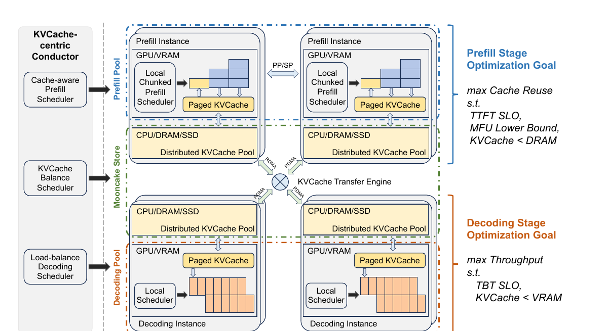
先看完整請求路徑
- 全域選點：Conductor 對每個 prefill instance 查最長 prefix match，估計快取傳輸、排隊與增量 prefill 時間；同時挑選能守住 TBT 的 decode instance。
- 取回舊快取：若最佳前綴在遠端，Mooncake Store 將對應 block 從 CPU/DRAM 搬到選定 prefill GPU；若本地已有足夠長前綴，就避免不必要的跨節點搬移。
- 增量 prefill：只計算未命中的 token。長輸入可切成不超過
prefill_chunk的片段，交由 CPP group 的不同節點流水執行。 - 逐層串流：新產生的 KVCache 一面存回 CPU，一面按 layer 非同步傳到 decode 節點，讓網路與 GPU prefill 重疊。
- decode：decode 端把完整 KVCache 從 DRAM 載入 GPU，將請求加入 continuous batch，逐 token 產生輸出。
- 後續重用：新 block 進入全域 pool；熱門 block 可因排程需求自然複製，冷資料依 LRU 淘汰，正在存取的 block 不被回收。
§1 · PDF p.3（論文標示 p.156）Fig. 3 · PDF p.5（論文標示 p.158）§3.2 · PDF p.6（論文標示 p.159）
{kind=link}
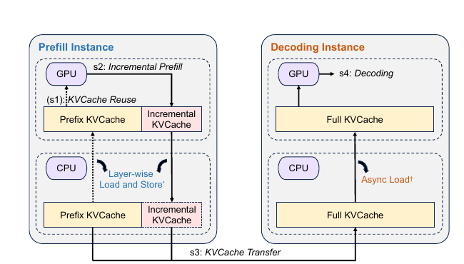
元件 A：分散式 paged KVCache
每份 KVCache 被切成固定 token block，block key 由自身 token 與前綴 hash 鏈結而成，可支援 prefix match 與跨節點副本。系統暴露 put、get、change_replica 與批次記憶體傳輸介面；資料可位於 GPU VRAM、CPU DRAM 或 SSD。評估採 256-token block，而文中說明一般粒度約 16–512 token。§3.2.1 · PDF p.6（論文標示 p.159）
元件 B：Mooncake Store 傳輸引擎
傳輸引擎以 GPUDirect RDMA/RoCEv2 搬資料，將大請求切成 16 KB slices，分散到多條 NIC path。它先依 CPU socket、PCIe switch、GPU 與 NIC 關係建立 topology matrix，優先走本地性較好的 NIC；連線端點按需建立並放入有上限的 pool，以 SIEVE 淘汰。若某條路徑、RDMA context 或 completion queue 暫時失效，系統改走 secondary path 並重試。§3.2.2 · PDF p.7（論文標示 p.160）
{kind=link}
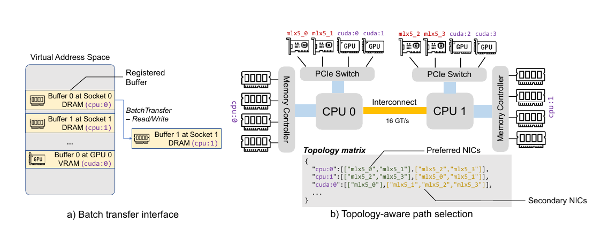
元件 C：Chunked Pipeline Parallelism（CPP）
Mooncake 將每 \(X\) 個 prefill 節點組成 pipeline group，把一個 prompt 切成多個 chunk，讓不同節點同時處理相鄰 chunk。相較跨節點 tensor parallelism 每層要做昂貴 all-reduce，CPP 只在 stage 邊界傳資料並可與計算重疊；相較 sequence parallelism，它不需因短／長輸入頻繁重組平行群組。論文把這視為維持獨立 prefill pool、處理動態長度分布的工程折衷。§3.3 · PDF p.8（論文標示 p.161）
元件 D：KVCache-centric Conductor
排程不是「選命中最多的節點」而已。Conductor 以離線 profiling 擬合多項式模型，對每個 prefill candidate 預估 \(T_{\text{transfer}}+T_{\text{queue}}+T_{\text{prefill}}\)，選預測 TTFT 最小者；decode 端另依負載預測 TBT。任一預測超過 SLO，請求即被拒絕。當全域最佳 match 相對目的節點本地 match 的比值超過 kvcache_balancing_threshold，才把 cache 搬到目的節點；搬移也產生副本，逐步消除熱點。門檻在論文實作中是人工調整。§4 & Algorithm 1 · PDF p.9（論文標示 p.162）
{kind=link}
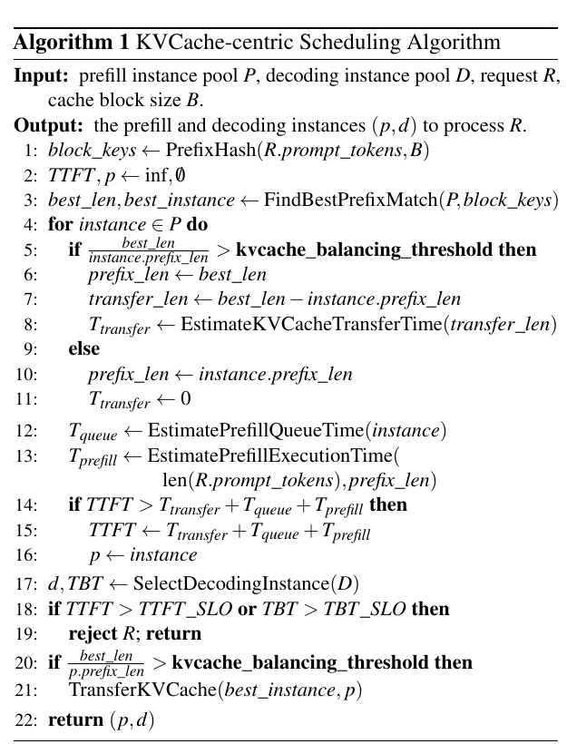
分析 這四個元件形成閉環：全域快取增加「可重用量」，傳輸引擎降低「取用成本」，Conductor 決定「重用是否值得且在哪裡做」，CPP/P-D 分離則保護兩種 latency SLO。任何一環缺失，都可能讓更多 storage 無法真正轉成更少 computation。
重算成本與傳輸成本
\(n\)：prompt token 數；\(l\)：Transformer layer 數；\(d\)：hidden dimension；\(a,b\)：由 attention/MLP 結構決定的常數。二次項來自 attention，線性乘上 \(d^2\) 的項在所分析模型中占很大比重。
重用長度 \(p\) 的 prefix 可省下約 \(\Delta C\) 的計算；需搬移的 KVCache 大小 \(S_{\mathrm{KV}}\) 對 \(p\) 呈線性。\(g_{\mathrm{qa}}\) 是 grouped-query attention 比率，\(s\) 是每元素 bytes。
若網路頻寬 \(B\) 相對 GPU 算力 \(G\) 高於右式，搬快取的理論時間才低於重算。此式是必要的量級判斷，不包含排隊、協定開銷與網路壅塞。
以文中 LLaMA3-70B 參數（80 layers、\(d=8192\)、GQA=8、BF16）和 8192-token prefix 計算，8×A800 節點的理論最低頻寬約 6 GB/s，8×H800 約 19 GB/s；作者也明說實際需要更高頻寬，後續實驗觀察到約 100 Gbps 以上才進入穩定區。§2.2 · PDF p.5（論文標示 p.158）§5.4.2 · PDF p.13（論文標示 p.166）
排程目標
每個 candidate 的 prefix match 會同時改變 transfer 與 prefill 項；queue 項則代表負載。若連最佳 pair 都無法滿足兩個 SLO，Algorithm 1 回傳 reject，而不是讓過載請求稀釋 goodput。
實驗的有效容量定義
TBT 取該請求最長 10% token-arrival intervals 的平均；有效請求容量是仍能讓請求滿足上述條件的最大輸入負載比例。這個定義把吞吐與互動 latency 綁在一起。
Algorithm 1 · PDF p.9（論文標示 p.162）§5.1 · PDF p.10（論文標示 p.163）
方法看似合理，真正的問題是：實驗有沒有把這條因果鏈撐起來？
有效容量、命中／重算、傳輸與 P:D 比例
平台、模型與比較組
| 模型 | 模擬 LLaMA3-70B 架構與運算特性的 dummy model；不是 Kimi 的實際 proprietary checkpoint。 |
|---|---|
| 節點 | 每節點 8×NVIDIA A800 SXM4 80 GB、4×200 Gbps RDMA NIC；Mooncake 節點各自指定為 prefill 或 decode。 |
| KV block | 256 tokens。 |
| 基線 | vLLM 0.5.1、vLLM Prefix Caching、vLLM Chunked Prefill；受當時實作限制，prefix caching 與 chunked prefill 是分開測，不是合併配置。 |
| SLO | 主要實驗 TTFT ≤30 s；TBT ≤100／200／300 ms。TBT 為每個請求最長 10% token intervals 的平均。 |
| 輸出 | 於預先指定長度停止生成；因此測的是 serving path，不測文字品質或模型語意。 |
三組工作負載
| Workload | 平均 input / output | Prefix cache ratio | 到達與規模 |
|---|---|---|---|
| Conversation | 12,035 / 343 tokens | 40% | Kimi 一小時真實 timestamp，12,031 requests；context 最長 128k |
| Tool & Agent | 8,596 / 182 | 59% | Kimi 一小時真實 timestamp，23,608 requests |
| Synthetic | 15,325 / 149 | 66% | Poisson arrival，3,993 requests；ShareGPT／LEval／LooGLE 以 1:1:1 混合 |
Table 2 · PDF p.10（論文標示 p.163）
Claim–test 配對
| 主張 | 測試／對照 | 觀測量 | 仍未排除 |
|---|---|---|---|
| C1：整體架構提升 SLO 內容量 | 16 個 8×A800 節點；Mooncake 對 vLLM 三變體；三個 TBT 閾值 | effective request capacity CDF | Mooncake 同時整合多個機制，無法歸因到單一元件 |
| C2：全域池優於本機 DRAM cache | 10 個 prefill 節點、每節點 300 萬 token；local vs global | hit rate、prefill GPU time | 固定 cache budget／拓撲以外的泛化 |
| C3：快取感知且兼顧負載的排程有效 | Global Cache Aware 對 local-aware、load balancing、random | 平均 TTFT | 未報 tail TTFT、預測誤差與門檻敏感度 |
| C4：傳輸引擎降低搬移成本 | Transfer Engine 對 TCP、Gloo；4×200／8×400 Gbps | cache size–latency、40 GB 有效頻寬 | 跨機架、故障期間、混合背景流量 |
| C5：網路可快到讓搬移勝過重算 | 模擬 24–400 Gbps，synthetic workload | 平均 TTFT、理論／實際 transfer time | 100 Gbps 轉折是該模型與 trace 的經驗值 |
| C6：P/D 需要配平 | 固定 16 節點改變 P/D 數量；TTFT 10 s、TBT 100 ms | effective capacity、平均 TTFT/TBT | 只是一組 workload/SLO；未測動態重配置成本 |
分析 最強證據是「受控的 local/global、scheduler 或 transfer 對照」；端到端大幅增益則證明整套系統可工作，卻不能單獨證明某一元件貢獻多少。生產叢集規模與歷史增益只由作者敘述，應另列為 operational claim。
端到端：有效請求容量
| Workload | TBT 100 ms | TBT 200 ms | TBT 300 ms | 比較解讀 |
|---|---|---|---|---|
| Conversation | +498% | +157% | +59% | 16 個 8×A800 節點；Figure 1 對 vLLM 系列 baseline 的容量曲線 |
| Tool & Agent | +64% | +42% | +22% | Figure 6 的標示；正文對 200 ms 明確以 vLLM Prefix Caching 為比較 |
| Synthetic | +62% | +40% | +28% | Figure 7 的標示；正文對 200 ms 明確以 vLLM 為比較 |
實驗事實 增益不是一個固定倍率：TBT 閾值越寬鬆，baseline 也能讓更多請求過關，所以相對差距縮小。Mooncake 在嚴格 TBT 下的優勢，與隔離長 prefill、減少重算及保護 decode latency 的設計一致。Fig. 1 · PDF p.2（論文標示 p.155）§5.2 · PDF p.11（論文標示 p.164）
{kind=link}
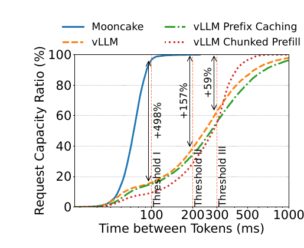
「更少 computation」是否真的發生
平均每請求 prefill GPU time 相對 vLLM 分別降低：Conversation 36%、Tool & Agent 53%、Synthetic 64%。換成倍數看，vLLM Prefix Caching 在三組 workload 分別是 Mooncake 的 1.43×、1.40×、2.59×；vLLM Chunked Prefill 則是 1.90×、2.68×、3.33×。這直接支援「共享前綴從全域池取回後，GPU 少做 prefill」的主張。§5.2.3 & Fig. 8 · PDF p.11（論文標示 p.164）
{kind=link}
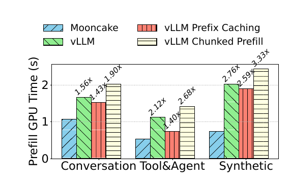
全域容量是否轉成命中與計算節省
local/global 對照使用 10 個 prefill 節點、每節點可放約 300 萬 token，並限制輸出來隔離 decode 影響。Global cache 對 Local cache 的 hit rate 倍數為 2.22×／1.38×／2.36×；對應 prefill GPU time 降為 0.76×／0.74×／0.52×。最大命中提升即 136%，最大 prefill 時間下降即 48%。§5.3.2 & Fig. 10 · PDF p.12（論文標示 p.165）
{kind=link}
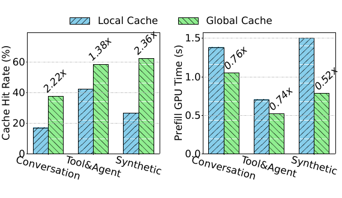
分析 同一張圖同時量「命中」與「GPU time」很重要：前者驗證儲存層，後者驗證命中沒有被傳輸成本抵銷。Synthetic 的熱點較分散，本機快取最吃虧，因此 global/local 差距最大；集中熱點則容易在單機也命中。
排程器：命中與負載必須聯合
16 個 8×A800 節點、conversation trace 下，平均 TTFT 為 Global Cache Aware 3.07 s、Local Cache Aware 3.58 s、Load Balancing 5.27 s、Random 19.65 s。全域快取感知相對只看本機 cache 再降約 14%，顯示跨節點借用 cache 仍有額外價值；而僅看 cache、不考慮 queue，也不是安全策略。§4 & Fig. 5 · PDF p.9（論文標示 p.162）
傳輸路徑：能否跟上計算
- Concurrency 64、最小傳輸粒度 128 KB、搬 40 GB cache 時，Transfer Engine 在 4×200 Gbps 與 8×400 Gbps 配置分別達 87 GB/s 與 190 GB/s，相對 TCP 為 2.4×、4.6×。§5.4.1 · PDF p.13（論文標示 p.166）
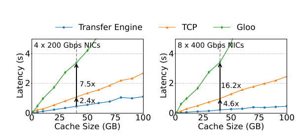
Figure 12導讀：固定 concurrency 64 後隨 cache size 增長比較斜率；40 GB 處的箭頭顯示 Transfer Engine 相對 TCP 在 4×200 與 8×400 Gbps 分別快 2.4×、4.6×。 - 將總頻寬模擬為 24–400 Gbps 時，超過約 100 Gbps 後平均 TTFT 低於 2 s 且小於重算；低於此點，實際傳輸時間偏離理論值並快速惡化。這是作者在該 synthetic workload 的經驗建議，不是通用常數。§5.4.2 & Fig. 13 · PDF p.13（論文標示 p.166）
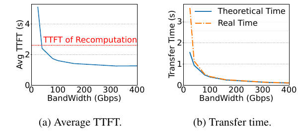
Figure 13導讀：左圖看 100 Gbps 附近的轉折：再低會迅速接近或超過重算 TTFT；右圖看低頻寬時實際值偏離理論值，顯示壅塞與協定開銷不能只靠公式估計。 - 128k prompt、95% prefix cache ratio 時，prefill time 降 92%，包含 schedule／transfer／load-cache overhead 後 TTFT 仍降 86%；圖中標斜線的工作可與 inference 非同步。§5.4.3 & Fig. 14 · PDF p.13（論文標示 p.166）
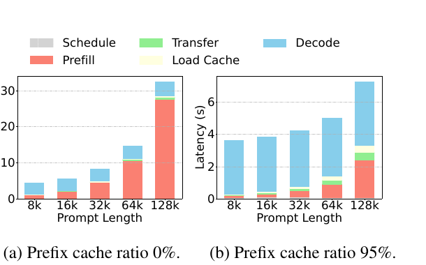
Figure 14導讀：比較同一 prompt length 的左右柱：95% 命中時 prefill 大幅縮短，transfer/load cache 占比增加但部分可非同步；128k prompt 的 prefill 與 TTFT 分別降低 92% 與 86%。
{kind=link}
{kind=link}
{kind=link}
生產部署：另列為作者報告
作者主張 作者報告 Mooncake 已在 Kimi 的數千節點服務、每日處理超過 1000 億 token；依內部歷史統計，相對先前系統，A800 與 H800 叢集分別多處理 115% 與 107% 請求。論文未提供這組生產比較的完整 trace、控制變因或原始資料，因此它證明實務採用與規模，但證據強度低於後文具控制條件的可重現實驗。§1 · PDF p.3（論文標示 p.156）
已提供的元件對照／敏感度
| 變因 | 控制方式 | 觀察 | 可支持的結論 |
|---|---|---|---|
| Global vs Local cache | 相同 10-node prefill budget、三個 workload | hit rate 最高 2.36×；prefill GPU time 最低 0.52× | 跨節點容量確實轉成命中與計算節省 |
| Scheduler policy | global-aware、local-aware、load balancing、random | 平均 TTFT 3.07／3.58／5.27／19.65 s | 必須聯合 cache locality 與 queue |
| Transfer implementation | 自有引擎、TCP、Gloo；兩種 NIC 配置 | 40 GB 時相對 TCP 快 2.4×／4.6× | 多 NIC/RDMA 工程能大幅降低搬移時間 |
| Network bandwidth | 24–400 Gbps | 約 100 Gbps 出現 TTFT 穩定轉折 | 架構有明確網路前提 |
| Prefix ratio | 0% vs 95%，8k–128k prompt | 128k 的 prefill −92%、TTFT −86% | 長前綴命中可覆蓋非同步搬移開銷 |
| P/D node ratio | 固定 16 節點，從 5P11D 到 11P5D | 約 1:1 effective capacity 最高 | prefill/decode 資源存在 workload-specific 平衡 |
{kind=link}
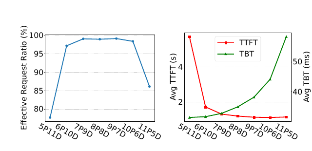
Fig. 5 · PDF p.9（論文標示 p.162）Fig. 10 · PDF p.12（論文標示 p.165）Figs. 12–14 · PDF p.13（論文標示 p.166）Fig. 15 · PDF p.14（論文標示 p.167）
分析 論文沒有把 Mooncake 拆成「只 P/D」「+CPP」「+global cache」「+global scheduler」「+optimized transfer」的完整 factorial ablation，因此不能把端到端 +498% 精確分配給各元件。也沒有呈現 block size、cache-balancing threshold、模型預測誤差、重複次數／誤差棒、動態 P/D 轉換成本的敏感度。
數據回答了部分問題；剩下的是適用邊界與仍未被證明的部分。
Trace 依賴、網路成本、故障語意與 Production Claim 邊界
優點
- 問題—機制對齊清楚：把長上下文的重複計算具體化成儲存—計算交換，且用式子與頻寬實驗閉環。
- SLO-aware 指標：用同時滿足 TTFT/TBT 的 effective capacity，避免只報 tokens/s 掩蓋互動延遲。
- 系統完整：包含快取 key/block、副本／淘汰、多 NIC topology、故障繞路、P/D 調度與 overload rejection，不只是一個抽象演算法。
- 多層證據：端到端、局部元件、頻寬敏感度、latency breakdown 與真實 trace 互相補強。
限制
- 模型替身：可重現評估是仿 LLaMA3-70B 的 dummy model；Kimi checkpoint、模型語意與真實 token 產生路徑不可得。
- 輸出長度預設：請求在預定 token 數停止，沒有測 sampling、不同 decoding policy 或輸出品質。
- 基線組合不對稱：vLLM 0.5.1 的 prefix caching 與 chunked prefill 因實作限制分開測；Mooncake 卻整合快取、P/D、排程與傳輸，端到端歸因需保守。
- 統計報告不足：未見 error bars、重複次數、warm-up、模型預測誤差、硬體／driver／CUDA 軟體棧細節。
- 範圍集中：主要在 A800、70B 架構、長上下文與高 prefix reuse；短 prompt、低重用、不同 KV-head 配置與跨機架網路不充分。
- 策略仍人工：
kvcache_balancing_threshold手調；生產 P/D ratio 通常固定，只在顯著負載變化時切換。
部署風險與適用邊界
| 風險 | 何時放大 | 論文覆蓋程度 |
|---|---|---|
| 網路成為瓶頸 | 每 accelerator 可用頻寬低、背景 RDMA 流量高、prefix 很短 | 有 24–400 Gbps 敏感度；跨機架與背景流量不足 |
| 快取投資不回本 | 共享前綴少、工作集超大且不重複 | 有三個 40–66% trace；低重用區未系統測 |
| 全域 metadata／一致性壓力 | 節點數與 block 數大、頻繁失效或模型版本切換 | 描述副本、LRU 與路徑失效；控制面擴充與恢復未完整量測 |
| 多租戶隔離與資料殘留 | 不同使用者／模型共享記憶體與 storage | 論文未討論 authorization、清除、加密或 side channel |
| 成本與能耗轉移 | DRAM/SSD/NIC 擴容抵銷 GPU 節省 | 沒有 TCO、能耗或 storage wear 評估 |
分析 最適合 Mooncake 的場景是：長 prompt、對話／agent 共享前綴高、GPU prefill 昂貴、叢集有可池化 DRAM/SSD 與每節點多條高速 NIC。若工作負載幾乎無共享前綴，或網路不足以越過計算—通訊 break-even，這套架構的複雜度未必值得。
KVCache-centric 架構還能交換哪些資源
真正的最佳化目標是一個線上價值函數
分析 可以把每次重用理解為：省下的 GPU prefill 時間 −（網路搬移 + 排隊 + cache 占用機會成本）。Algorithm 1 已估前三項中的大部分，但 eviction 導致未來 miss 的機會成本只靠啟發式與 LRU 間接處理。這解釋了為何最大 prefix match 不一定是最優選點。
排程同時在做隱式 cache placement
分析 當請求被送往一個本來沒有最佳前綴的較空閒 instance，cache transfer 會留下新副本；未來請求因此更可能在多個節點命中。換言之，load balancing 的結果反過來改變 cache topology，cache topology 又改變下一輪排程成本，形成回授系統。穩定性與振盪應是大型部署的重要議題，但論文未量化。
可延伸的實驗與設計
- 自適應門檻：讓 balancing threshold 依 NIC queue、cache pressure、prefix length、SLO slack 自動更新，並比較固定門檻的 tail latency。
- 預測校準：報告 \(\hat T_{\mathrm{TTFT}}\)／\(\hat T_{\mathrm{TBT}}\) 的誤差分布與 HTTP 429 的 false reject／false admit，否則 admission control 難以審核。
- 完整消融：在相同 runtime 上逐項加入 P/D、CPP、global store、global scheduler、多 NIC engine，量出各自與交互作用。
- 成本曲線：以每百萬有效 token 的 GPU-hours、NIC bytes、DRAM/SSD footprint、能耗為共同單位，才能檢驗「多 storage」在經濟上是否划算。
- 異質硬體：重新代入不同 \(G\)、HBM/DRAM 帶寬、KV-head 數與 NIC 拓撲，實測 break-even；不要直接沿用 A800 上的 100 Gbps 經驗值。
- 安全生命週期：加入 tenant-aware cache key、模型版本隔離、加密／擦除與故障恢復測試，確保重用不跨越資料邊界。
推測 若未來模型採更強的 GQA/MQA、量化 KVCache 或稀疏／分頁注意力，每 token cache bytes 下降會讓相同 DRAM 容量涵蓋更多前綴，也降低搬移成本；但更快的 GPU 同時提高「重算」速度，兩股力量會共同移動 break-even，方向不能只憑直覺判斷，必須重新測量。
- 如果把 vLLM 的 prefix caching 與 chunked prefill 在同一版本真正合併，端到端差距還剩多少？
這決定 +498% 有多少來自架構本身、多少來自基線功能組合限制。 - Conductor 的 latency model 在突發流量、cache miss 與故障期間誤差多大？
Admission control 依賴預測；平均準確不代表尾端不會錯誤接受或拒絕。 - 100 Gbps 的轉折如何隨模型大小、GQA 比率、prefix length 與 GPU 算力改變？
這是把論文設計移植到其他 accelerator／叢集前最直接的 capacity-planning 問題。 - 全域副本與 LRU 在非平穩 workload 下會不會振盪或污染 cache？
排程會改變副本分布；如果熱門集合快速切換，搬移與淘汰可能互相放大。 - 把 DRAM/SSD/NIC 的成本、能耗與故障面算進去後，哪些 reuse ratio 才有正 ROI？
論文證明「算得比較少」，但尚未證明每個部署都「花得比較少」。
重算–傳輸損益、排程目標與證據索引
| 正式標題 | Mooncake: Trading More Storage for Less Computation — A KVCache-centric Architecture for Serving LLM Chatbot |
|---|---|
| 作者 | Ruoyu Qin、Zheming Li、Weiran He、Jialei Cui、Feng Ren、Mingxing Zhang、Yongwei Wu、Weimin Zheng、Xinran Xu |
| 會議 | FAST 2025（論文集頁碼 155–170；Best Paper） |
| 篇幅 | 共 17 頁 |
| 正式來源 | USENIX 論文頁面 |
| 本閱讀分類 | LLM Systems / KV Cache Management |
分析 雖然 Mooncake 同時包含 prefill/decode（P/D）分離與排程，但論文的中心抽象是「KVCache 成為跨節點的一級系統資源」：把 CPU、DRAM、SSD 與 NIC 組成全域快取，再讓排程器依快取位置決定計算位置。因此歸入 KV Cache Management，而不是泛稱推論排程。§1 · PDF p.3（論文標示 p.156）
術語表
- TTFT
- Time to First Token，從請求到第一個輸出 token 的延遲，主要受排隊與 prefill 影響。
- TBT
- Time Between Tokens，輸出 token 間隔；本文以最長 10% 間隔的平均評估每個請求。
- KVCache
- 每層 attention 已計算的 key/value 狀態；可供後續 decode 或相同 prefix 重用。
- Effective capacity
- 在指定負載下，同時滿足 TTFT/TBT SLO 的請求容量比例／最大負載。
- Conductor
- Mooncake 的全域控制面，包含 cache-aware prefill、cache balancing、load-balanced decode 三類決策。
- Mooncake Store
- 分散式 KVCache 儲存與傳輸層，使用 CPU/DRAM/SSD、GPU VRAM 與多 NIC RDMA。
- CPP
- Chunked Pipeline Parallelism，把一個長 prompt 切成 chunks，在多個 prefill 節點流水執行。
- MFU
- Model FLOPs Utilization，實際模型 FLOPs 相對硬體理論能力的利用率。
- GQA
- Grouped-Query Attention，多個 query heads 共用較少 key/value heads，降低 KVCache 大小。
重點來源索引
- 摘要、Figure 1、Introduction 開頭——問題、有效容量 +59%～+498%、生產規模。PDF p.2（論文標示 p.155）。
- Figure 2 與系統概觀——Conductor、P/D pools、全域 Store、逐請求三階段流程、歷史部署主張。PDF p.3（論文標示 p.156）。
- §2.1–2.2——prefill/decode、TTFT/TBT、effective throughput、prefix cache 重用。PDF p.4（論文標示 p.157）。
- §2.2 與 Figure 3——FLOPs、KVCache bytes、bandwidth/compute break-even、資料工作流。PDF p.5（論文標示 p.158）。
- §3.2.1——block key、paged cache、副本、LRU、API、GPUDirect RDMA。PDF p.6（論文標示 p.159）。
- §3.2.2 與 Figure 4——16 KB slicing、拓撲感知、多 NIC、endpoint pool、故障繞路。PDF p.7（論文標示 p.160）。
- §3.3 與 §4 開頭——CPP 動機、TP/SP 比較、全域排程問題。PDF p.8（論文標示 p.161）。
- Algorithm 1 與 Figure 5——cache/load/SLO 聯合排程、HTTP 429、四種策略 TTFT。PDF p.9（論文標示 p.162）。
- §5.1、Table 2、§5.2——硬體、dummy model、baseline、SLO、三組 trace。PDF p.10（論文標示 p.163）。
- §5.2.2–5.2.3、Figures 7–8——synthetic effective capacity 與三組 prefill GPU time。PDF p.11（論文標示 p.164）。
- §5.3、Figures 9–11——單 token 320 KB、容量命中曲線、local/global 對照與熱點副本。PDF p.12（論文標示 p.165）。
- §5.4、Figures 12–14——傳輸引擎、頻寬敏感度與端到端 latency breakdown。PDF p.13（論文標示 p.166）。
- §5.5、Figure 15、§6–7——P/D ratio、相關工作、結論。PDF p.14（論文標示 p.167）。
分析 要查「為什麼搬快取值得」看來源 04；查端到端容量看 01、09、10；查全域 cache 的直接因果看 11；查網路前提看 12；查 P/D 配平與工作適用性看 13。